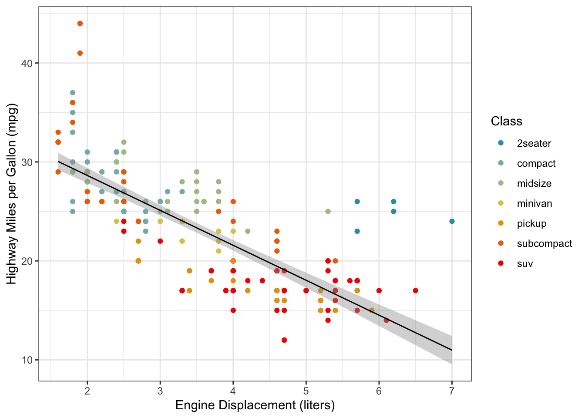

So, the time has come to write your thesis or report! How do you do this? This section provides a couple of tips and tricks to help you write a good paper.
3.1 Writing Style
Your writing should be concise and clear. The following tips will help you with this, but I do not intend for this list of tips to be exhaustive or to replace either a writing course or good editing.
Use active voice. Active voice is easier to read and is more natural. For example, instead of saying “The data was analyzed,” say “We analyzed the data.” Pay attention to the actor in a sentence as well: it is unusual for a measurement device to actually collect the measurement; rather, the analyst uses a device to collect the measurement.
Pronouns are fine, in moderation. Some engineering writing manuals recommend avoiding pronouns, but doing this makes it hard to use active voice. Avoid informal language, but a sentence like “In this paper, we present a new method to” is perfectly fine. But if every sentence in the paper uses a pronoun, you should think about varying your writing style.
Prefer present tense. Generally, the voice of your writing should be as though you are presenting the findings at the time the reader is reading. For example, instead of saying “The data revealed that…” say “The data reveal” or “We find that…” Exceptions to this include when you are describing a completed data collection process, “We collected the data at these sites on these days.”
Link ideas in a coherent way. If one sentence describes how A leads to B, then the next sentence had better describe how B leads to C. If the next sentence is something about D, then your reader will be lost.
Headers do not substitute for coherence. Headers are there to aid in navigation, and not to replace connective language that guides the reader through the text. A test: if you remove all headers, is the text still readable? If not, then you need more connective language.
Don’t create unneeded acronyms. Acronyms are helpful for consolidating complex ideas in a concise way. But over-use of acronyms, particularly ones you define yourself, tends to make text unreadable. Generally, if an acronym doesn’t already exist, you shouldn’t make a new one. DOT, OLS, MNL, MCMC, FHWA, etc. are all well-known acronyms that you should use (after defining on first use). Writing a paper about urban green spaces? Just call them urban green spaces because UGS isn’t a common acronym.
Writing in this discipline generally follows the IMRD guidelines. One deviation is that most papers in my fields generally contain a somewhat longer literature review. So, we write like an ILMRD paper.
3.2.1 Introduction
Effective introductions are often four paragraphs:
Big problem (motivation) Understanding how individuals make travel decisions is essential for addressing pressing transportation challenges such as congestion, emissions, and inequitable access to opportunities.
Narrow problem and limitations of prior work (research gap) Although previous studies have improved our understanding of travel behavior, most rely on cross-sectional data and therefore provide limited insight into how individuals adapt their travel choices over time.
Current study and contribution (what this paper does) This study addresses these limitations by leveraging longitudinal travel survey data to examine how changes in household circumstances influence mode choice behavior.
Paper outline (roadmap) The remainder of this paper reviews the relevant literature, describes the data and methods, presents the empirical results, and discusses implications for transportation planning and policy.
Sometimes points 1 or 2 will be more than one strict paragraph.
3.2.2 Literature Review
The literature review effectively restates points 1 and 2 of the Introduction, but with considerably more detail and references.
This is not simply an annotated bibliography where you summarize the papers you have cited; instead, the literature review is a critical persuasive analysis of what has been done, what its limitations are, and how a new study — presumably yours — can improve on it. By citing relevant work, you establish your own credibility and illustrate how you are not just doing this because you thought it was interesting, but are making a substantive contribution to the field. you will make your assertions and use the references to give you credibility and validate your statements. Read papers before citing them (Simkin and Roychowdhury 2002), at least to the point where you can summarize their key methods and findings.
Use the latest version of Zotero to organize your citations and notes. I will probably set up a shared library for you. Use the zotero citation editor, or quarto citations.
I prefer to use author-year citations, as are common in the APA guidelines. Pay attention whether the citation is in the text or parenthetical. If you use a citation manager correctly, changing the citation style is relatively easy.
Remember to cite several papers from the journal to which you are submitting this paper. If you cannot find any relevant papers from the target journal, it is a good sign that you should submit to a different journal.
The last paragraph of the literature review should clearly identify the gap your research is trying to fill.
3.2.3 Methodology
In this section, you describe your approach to the problem that you are addressing. Often, this section will contain more citations to the literature, particularly if you are using a model that someone else has developed, or a dataset that someone else has collected. In general, you should describe the process in sufficient detail that someone else could replicate your work if they had access to the same data and code.
This is the section with the most mathematics. Use numbered equation environments, and define all terms. For example, the standard linear model is described as
\[
y = X\beta + \epsilon
\tag{3.1}\]
where \(y\) is the dependent variable, \(X\) is a matrix of independent variables, \(\beta\) is the vector of coefficients, \(\epsilon\) is the error term. Equations are part of the text, and do not “float” like figures or tables. As such, you do not need to “introduce” equations with their number. But if you refer to them again, you should reference them, like the regression model described in Equation 3.1.
You should share your data and code as feasible. Include a reference to your project’s GitHub repository. If the data are public and you can fit them in the repository, put them there.
Figures and tables should be numbered and referenced in the text. Table captions are titles, and not sentences like figures. Captions are placed above the table, but Quarto or LaTeX will handle this for you. Tables generally have only horizontal lines, and only the lines that are critical to separate blocks of information. I like using the modelsummary package to make tables. Use publication-ready names instead of the variable names in your table.
In this section, you present the results of the methods that you outlined in the previous section. This may include estimated models, summary analyses, and visualizations with accompanying descriptive analysis.
For example Figure 3.1 shows the data from a regression model like the one described in Equation 3.1. Axes should be clearly labeled with any relevant units. I prefer the theme_bw function from the ggplot2 package to make my figures look nice, with colors for continuous data from the viridis package and colors for categorical data from the wesanderson package. Figure captions are sentences that describe the figure. They generally come below the figure, but Quarto or LaTeX will handle this for you.
ggplot(data = mpg, aes(x = displ, y = hwy, color = class)) +geom_point() +theme_bw() +stat_smooth(method ="lm", color ="black", size =0.5) +scale_color_manual("Class", values =wes_palette("Zissou1", 7, type ="continuous")) +xlab("Engine Displacement (liters)") +ylab("Highway Miles per Gallon (mpg)")
Warning: Using `size` aesthetic for lines was deprecated in ggplot2 3.4.0.
ℹ Please use `linewidth` instead.
`geom_smooth()` using formula = 'y ~ x'

Figure 3.1: Relationship between engine displacement and vehicle fuel efficiency.
Table 3.2 shows the estimated regression coefficients for the model described in Equation 3.1.
In this section, you discuss the significance of your results in the context of the problem that you set out to work on. There will often be limitations in your study, and you should candidly discuss them while providing avenues for future research that you or others will work on.
3.2.6 Conclusion
This is often a short section. In this section, you summarize your results and discuss the implications of your work.
3.3 Template
I have made a quarto template that integrates the above sections into a document that can be rendered to a PDF of your thesis or a journal article. You can find this at https://github.com/byu-transpolab/template_quarto.